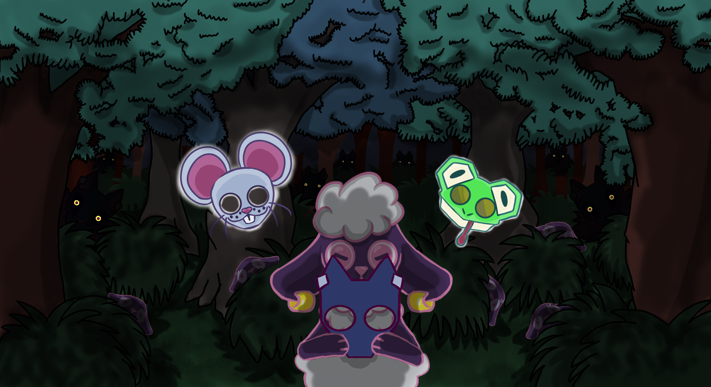

Projeto Digital · Puzzle 2D Top-Down
Wool & Wicked

Wool & Wicked é um jogo de puzzle e exploração 2D top-down em que você acompanha Beeel, uma ovelha sequestrada por uma bruxa e levada a uma floresta sombria. Para escapar, ela precisa alternar entre máscaras mágicas que permitem manipular elementos do cenário, acessar novos caminhos e solucionar desafios ambientais, resgatar as outras ovelhas e enfrentar a bruxa loba antes que ela e seus servos a capturem. Atuei como programador, produtor e game designer, em um projeto desenvolvido com mentoria da LumoLAB.
Sobre o projeto
Em Wool & Wicked, a progressão gira em torno do uso das máscaras: cada uma concede habilidades diferentes para interagir com o ambiente e superar obstáculos. O jogador explora os cenários, observa o comportamento dos lobos, encontra caminhos escondidos e escolhe a máscara certa para cada desafio (WASD para mover, E para interagir, 1/2/3 para equipar máscaras e 4 para retornar à forma de ovelha) até libertar todo o rebanho.
Destaques
- Alternância entre máscaras com habilidades distintas para resolver puzzles
- Manipulação de elementos do cenário e desafios ambientais
- Exploração 2D top-down em floresta sombria com lobos e caminhos escondidos
- Objetivo de resgatar o rebanho e enfrentar a bruxa loba
Galeria